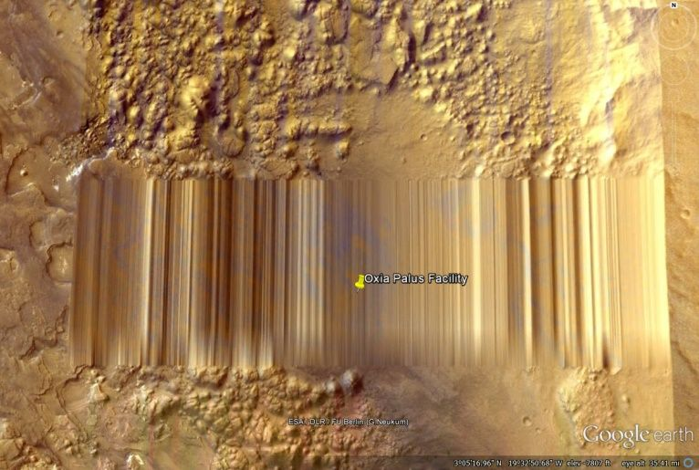
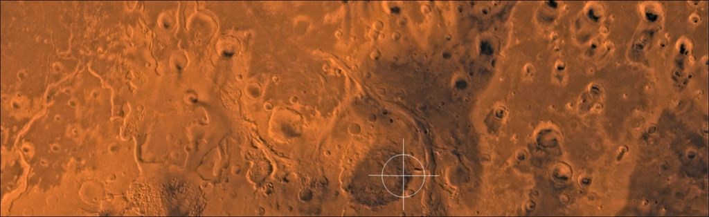
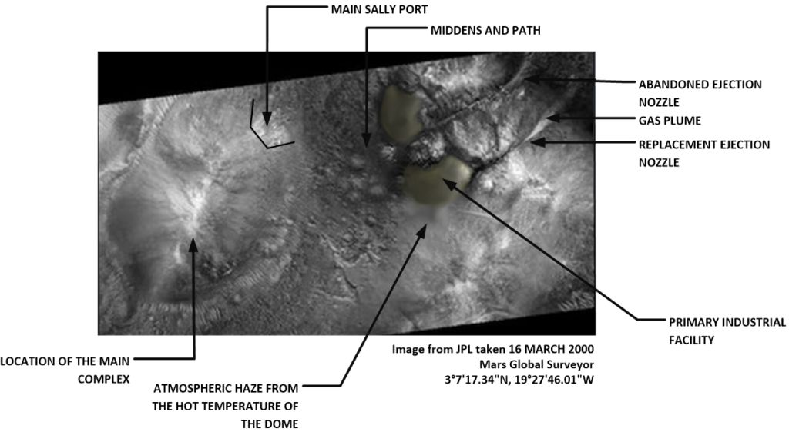
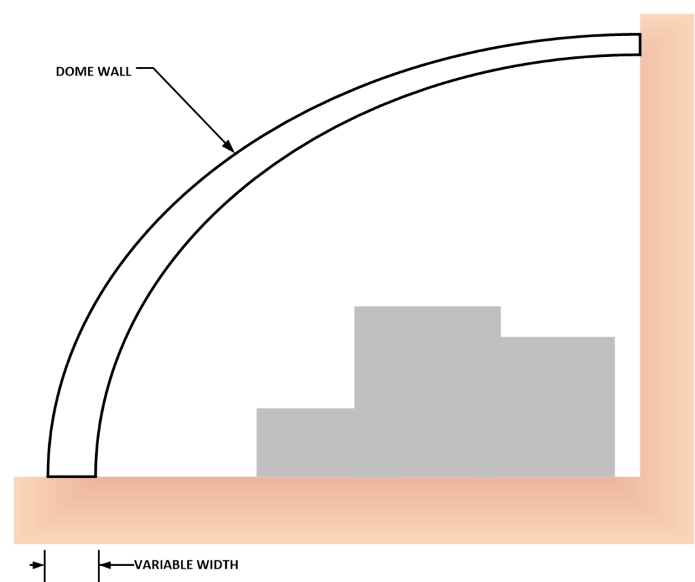

There are all kinds of extraterrestrial facilities in our solar system. All one needs to do is look for them with an open mind.
No, I am not referring to things that have a similarity to contemporaneous human articles. Like a lizard on the Martian surface, a statue, or a bone of an ox. Those are just fun optical illusions that some folk take quite seriously. It’s all just fun and silly nonsense. No, instead, I am referring to actual “brick and mortar” structures constructed by extraterrestrials that are viewed, photographed, and exploited by MAJestic.
This post is in regards to one of the facilities; the Oxia Palus facility on the planet Mars.
This facility is very interesting in that it is an active factory. It is a complete “stand alone” full-purpose facility with mining, habitation, water source, tunneling, and fabrication constructions. It is also occupied and the relationship between MAJestic and the occupants is a very interesting one. As such let’s just take a general look at this facility.
Now, of course, it’s not supposed to exist.
Humans are alone in this universe, don’t ya know. It is just like the narrative that extraterrestrials do not exist, and that Americans aren’t taxed enough compared to the rest of the world, and of course that great knee slapper; Hillary Clinton never had anyone murdered. (You can read about it here, here, here, here, here, and here.) Those are realities that are dismissed off-hand by the ignorant, and those paid to do so. At this point, I must comment that if you (the reader) believe any of that “official” nonsense then you really just don’t belong here. This place is all about what I know, from my point of view. As such it does not fit into the narrative designed for general public consumption.
Ok, am I clear on this? So let’s go ahead and talk about this facility…
Location
As stated previously, the facility is located on the planet Mars. It is not on the Earth. The specific physical location for the facilities(s) can be found at 3°7’17.34” North, 19°27’46.01’ West. It is in the Oxia Palus region of the northern Mars hemisphere, slightly above the Martian equator. (Thus the name.)
It consists of a number of satellite facilities, also large, but significantly smaller than the main base facility. Most of the complex is under the ground. The only visible portions are the two external domes, gas discharge ports and ejection tubes, and the North-East Sally port to the main underground habitation area.
You can see it on Google Earth (Mars option) at coordinates M11-00099. The last time that I checked using Google Earth, this area was censored.
3°7’17.34” North, 19°27’46.01’ West
The following is a screen capture of Google Earth showing the censored area. Luckily, there are other photographic references that can be used. The United States is not the only nation which has mapped Mars don’t ya know. Even India has sent spacecraft to Mars and orbited it. (Phew!)

The censorship is so bad (or obvious) that they have needed to make public statements regarding it. According to Google, things on Google Earth are censored by local governments, and that most censorship by the American government ended around 2005. Conveniently, that was right before Obama was elected president (in 2007). After all, he’s the most “transparent president”. (Bah Ha Haw!)
Today they claim that any and all censorship is driven by the needs of local governments to protect people’s privacy. Ah. There is no need to dispute that. Google is well known to censor the search items, and all of their products for all sorts of reasons, by all sorts of organizations, including the American (and other) governments. (All you need to do to accomplish this is to pay them enough money or offer them personal incentives. They are rather mercenary, don’t you know. I can’t blame them. They have gotten quite wealthy by observing the dictates of the “powers that be”. Same for Snopes, especially for Snopes, but that is another story for another time.)
That’s why Mars was censored; to protect privacy.
They now claim that in most cases the censorship is due to the quality of the images that they receive. In the case of the various Martian orbiters; Mars Odyssey, the Mars Reconnaissance Orbiter (MRO), and the Mars Global Surveyor all simultaneously presented garbled images on every one of their multiple overpasses over this particular geographic location. You know, there are many articles praising the high quality images taken of Mars, and the high-resolution photos. Yet, for some reason, they never seemed to make it to the Google headquarters. Me thinks that someone had best wake someone up at that massive Google complex and tell them to clean up their act.
Now the truth be told, you and I both know that they were instructed to censor this location. We also know that the United States government are particularly anal about how private companies are able to disclose instructions from the United States government. I am sure that the employees at Google would love not to censor, but their hands are tied on this matter. So, no hard feelings you Googlers, you.
Well, Google is of absolutely no use. That should be expected So good luck finding anything of significance from any large American software company or any United States agency. They only provide censored and sanitized images for common folk that fits a common, conventional narrative. They’ve got to keep the illusion alive don’t ya know.
Luckily, there are other photos available. Don’t use Google. It is a slick “user friendly” interface that provides absolute false and misleading information. They do not do anything without permission by the American government. All those visits between the upper management and President Obama were for a reason. Young man, you need to go elsewhere.
Other Map Resources
There are other sources that the interested reader can turn to. Here are just a few that are available;
- Bing Image Search. Note that the site scans for images, and only posts images that it can find. Looking for a specific photo here is often like looking for a “needle in a haystack”.
- JPL. This is the site where the photos to follow were obtained from. However, finding the proper image is rather difficult.
The reader can find the location and zoom into it. The photo below shows the general location for the Oxia Palus facility as viewed from high orbit.

Mapped Region
The following is a map generated from a different photograph of the same region on Mars. This map was taken on the 16 March 2000 and released by JPL. It was taken by the Mars Global Surveyor.
The above is a (formerly) publically available photograph of the base taken and released to the public prior to the discovery of the facility. The reader should note that at this time the facility was not dormant. It was still generating heat, operating the furnaces, ejecting hot gasses, and discharging slag.
I ask the reader if they remember when Bill Clinton was President of the United States. Do you remember? Well, the photo above was taken during his presidency.
General Layout
The Oxia Palus Facility is located in the Oxia Palus quadrangle. Its approximate location is considered to be at 20° west and 3° north in the northern hemisphere of the planet Mars. This area is along the Martian equator.
There are numerous advantages for launching from a site near the equator, and it is suspected that these advantages were considered when the initial base was constructed. There is evidence that one (of many, obviously) of the first considerations in the construction in this facility was the conservation of delta-V during operation. This is an observation that suggests that their overall space flight technology was not nearly as sophisticated as their planet side construction ability. This concern might be illusionary, however.
The exact location of the center of the triangle formed by the three major complexes is at 3°7’17.34″ N, 19°27’46.01″W. This facility is amazingly ancient. It is ancient from the point of view of human experience, as well as from the point of view of geologic time.
The Oxia Palus base is divided into three primary sections. These sections consist of a [1] Main habitation area that lies underneath a large hill, and two externally exposed domes [2] and [3]. The underground habitat is (by far) the largest part of the facility. It is well protected from any kinds of harmful radiation that might bombard the planet by the layer of protective dirt. It also extends deep downward into the soil and rocks below.
The main habitation area houses the bulk of the living quarters for the residents of the base. It also contains the life support, food, recreation (what is determined to be “recreation” resources), and living quarters. Access to interplanetary vehicular transport is through the sally port closest to the domes. The upper exposed domes house the industrial facility as well as the power support structure.
Of the exposed domes, the one that houses the power plant and supply facilities is the oldest dome. It also houses the remains of a now obsolete or nonfunctional manufacturing facility and ejection chamber with the associate systems. The former now lies in disused ruin outside the dome. It cannot be repaired or reused, as there is a section that is completely damaged.
Next to this dome is a newer “secondary” dome. Inside of it is an expanded manufacturing facility that was constructed during a later phase of occupation. The two domes are connected underground seamlessly such that it appears that this is one large self-contained facility structure, and not the two domes as the outside view would suggest.

This is an overhead view of the Oxia Palus base. This photo was taken by the Mars Global Surveyor on 16 March 2000. You can get the full sized image at Malin Space Imaging Systems. (You’d best hurry before they take it down. People like YOU shouldn’t have access to this kinds of information, don’t you know.) This image is courtesy of JPL.
The primary dome resides under the small hill to the left of the picture. The two industrial and power domes are to the right side of the picture. The ejection nozzles from the facility can be clearly seen. The photo is from NASA and I am sure that the rank and file employees did not know that was going on at the time. The photo was taken at one of the moments when there was material ejecting from the dome. Thus the bright white plume of gasses during ejection.
During ejection, the gases also carry away some debris and small particles. This is borne aloft by the local weather and tends to travel away from the ejection port. Typically, there is a Northwest trajectory for the gas plume during discharge.
The ejection nozzle(s) consist of a large tube that leads from the dome, crosses through the hill(s) in an excavated trough and then is on stilts like a railroad bridge above the Martian surface. Each time the hot gasses are discharged, there is a degree of wear and tear on the pipe. This eventually will damage the tube so that repairs are periodically required. It is not a safe activity, and repairs in the Martian atmosphere, high above the ground is not something that is taken lightly.
Geology
The Oxia Palus base is located near an ancient Martian lakebed. Surrounding the area is a fluvio-lacustrine environment indicative of standing water in the remote past. There was no indication that the flow of water occurred after the facility was created. There was no apparent external evidence of water-type erosion on any of the facility structures at all. However, evidence of airborne particulate erosion and damage was prevalent throughout the facility.
There was extensive evidence for the remains of ancient lakes, springs, and valleys that formed deltas where water once flowed a long, long time ago. The local area was composed of both various compositions of clays and rocks.
Most of the rocks, we believe were carried off from distant areas during a wet period in the distant Martian past. The rocks vary from slightly rounded pebbles (formed from abrasive water action) to imbricated rock clusters. In this region, the rocks are mostly exposed with patches of hard crusty and compacted soils rich in minerals.
Generally, most rocks had sharp edges and were split in patterns indicative of the types of rocks found. Apparently, the flow of water in the remote past was not of a long enough duration to create extensive water erosion on the rocks. There weren’t beds of rounded pebbles like one would see around Earth Side Rivers. Instead are found splintered and jagged rocks with slightly rounded edges.
Generally, the rocks are eroded by either water or air, and have an overall grey appearance. But that is not obvious to the casual observer. They are typically covered with a fine reddish dust that permeates everything in the region. The rocks are typically layered with water erosion creating an exposed surface. Most of the rocks near the facility were andesite’s however, ore bearing stone was found in ample quantities near the primary ore processing facility.
Water Under the Surface
The layering of rocks showed the encapsulation of ice within alternating layers of rock that are typically three meters thick (from nine to ten feet thick). In some areas, especially where there was evidence of clays and prior water flows, the layer thickness approaches 20 meters thick (that is around 90 feet). Within the clays and gravels are encapsulated pockets of ancient water / ice containing a high concentration of salts and minerals.
There is also evidence of previous hot springs in the area as is indicated by the presence of Opaline silica bearing ores and gravels. It is strong evidence for this that one of the apparent sites of liquid water to the site originated from an underground aquifer or possible hot springs site at one time. It remains to this day a curious avenue of investigation, as are some of the mine tunnels most certainly mine(d) the ice found there.
Occupants
The current occupants are NOT the ones who have first constructed the facility. The species that made the facility abandoned it a long time ago. When they abandoned it, and who they were has never been ascertained.
It is currently occupied by humanoids with a “similarity” to contemporaneous earth-humans. These individuals are there for the duration. They can never return back to their point of origination as they are now. They have been changed.
The occupants do not really understand the technologies at the facility and are learning as best they can. The facility is old and the equipment does tend to fail and malfunction. There are very few spare parts available to the staff there.
It is an ordered, semi-military / scientific / industrial environment there, but the staff does not wear military uniforms. Instead, the occupants wear uniforms of a bluish color. The occupants have two sexes, with males being the dominant gender. Leadership is hierarchical through merit, and is all male. The few females that are present are involved in scientific and medical roles. Everyone there has multiple roles and multiple duties. The work hours are long. There are few days (off) for rest or relaxation. It is something that is not allowed or permitted for the current occupants.
While this facility is uniform of one species type, they do interact with other extraterrestrial species from time to time.
In general, the occupants are not a happy lot. This is not the biological environment that their physical bodies require. There is little in the way of entertainment. They spend much of their time during the occupation of this post engaged in work that was promoted to them as for the “betterment of their species”. There are no efforts to breed or grow families. This posting is a functional one and not a colony.
Access
Access to the facility is via a portal. There are numerous portals. The primary personnel portal is located underground in the main habitat. There is also a utility portal located in the older dome, off to the side near the power generation area. It is a larger portal and is used as needed. The portals are not doors in the conventional sense, they are points of access where things can enter and leave from one geographical place to another.
Whenever there is interplanetary transport involved, the transports land next to the sally port and are accessed externally from that point. There are no other points for external access.
The vast bulk of visitors and supplies transit through the ports. Vehicular landings are rare. As are efforts related to egress from the facility, and external maintenance tasks.
Dome Wall
The two domes are constructed of an interesting material. It is the same for material for both dome walls. The material is not transparent, but is actually opaque. The thickness of the material apparently varies over the total surface of the wall, with the thicker sections being closest to the (lower) local Martian topography. They are thicker at the base than at the apex. The thickness is also neither uniform nor regular in any way. This is a confusing attribute and suggests an organic construction methodology. The thickness varies from just over three cm (an inch thick) at the apex to over 0.6 meters (two feet) thick at the base.

The most outwardly visible aspect of this base, as well the reason how it was discovered in the first place, are the two external domes. These domes are large structures, which from the outside appear to be smooth, featureless surfaces.
However, the appearance is deceptive. It is not actually true. The outer skin of the domes shows signs of wind borne weathering. This was especially noticeable when one stands outside the domes and can physically observed the surface close up. A person can feel the roughness even through their gloved hand.
The shapes of the domes are not spherical. Instead they are elliptical. This is not only in regard to the overall top projection, but also in terms of the cross sectional views. This too, lends one to conclude that the manufacturing and construction methods used were more of an applied organic technique of some significance and utility.
The domes did not interface with the surrounding Martian bedrock as one would assume. On the earth we use a poured concrete foundation solidly located upon a prepared flat bed, but apparently this was not the case at all. Here, they actually used some kind of technique that would cause a merging or transmutation of the dome material with that of the surrounding bedrock. It is unknown how this was accomplished.
Dome Material
The dome material is apparently a closed-cell ceramic-appearing composite material. Yet its composition was neither entirely a metal, nor a ceramic. It was something altogether different. The material is currently opaque, but possibly was translucent at one time. Apparently the weathering of the outside domes affected this property. Both domes have weathered differently over time.
Structurally it is a polyaromatic amide. That is, it contains aromatic and amide groups. One could say that for the most part, the individual polymer strands of the wall material were held together by hydrogen bonds that form between the polar amide groups on adjacent chains. The aromatic components of the polymers in the material had a radial (spoke-like) orientation, which gave a high degree of symmetry and regularity to the internal structure of the fibers.
What was the most unique characteristic of the material was that silica tetrahedron. This tetrahedron is composed of a single silicon atom surrounded by four equidistant oxygen atoms, all seemed to be embedded within “pockets” that were structurally oriented around the polyaromatic amides. That was confusing. Generally, the silica structure is the basic structure for many ceramics, as well as glass. It has an internal arrangement consisting of pyramid (tetrahedral or four-sided) units. Four large oxygen (0) atoms surround each smaller silicon (Si) atom.
When silica tetrahedrons share three corner atoms, they produce layered silicates (talc, kaolinite clay, mica). When silica tetrahedrons share four comer atoms, they produce framework silicates (quartz, tridymite). But, by being embedded within malleable “pockets’ the material was able to link the individual polymer strands of the wall material on adjacent chains. Thus a situation of enormous strength was achieved, while at the same time the ease of manufacture of clay-like products was facilitated.
At least that is the theory. No one has ever tried to duplicate this engineering feat. At least, I am not aware of it. But, then, what do I know? No body ever tells me anything.
If samples were to be taken at various points in the dome wall structure, one would notice Frenkel-defect’s in the lattice arrangements of the crystals near the upper most portion of the dome. This is a characteristic of both domes, with the primary dome (the oldest) having the most defects.
Obviously the material consisted of degraded aramid fibers, fragile ionic bonding, and strange material forms that made no sense altogether. We should not bother with this kind of dedregration, and simply label it fossilized junk and leave it at that.
Ah, but all this is speculative. Don’t ya know…
Purpose
The initial intended purpose of this facility was to process ores into raw material. It is primarily a smelting facility. It has since been repurposed for scientific study, and some other specialized activities.
There are actually two factories at the location. There is [1] an original factory, and [2] a newer replacement factory.
Each facility lies under a dome that is constructed at the side of the hills at that location. Each facility has a gas ejection port that is elevated above the ground and leads away from the facility proper. When gas is ejected, it is discharged away from the facility and shielded by the low hills.
Slag and other residue are carted out of the facility through a port that lies under the old (initial) dome. The newer facility utilizes the port in the older facility. It is a “shared” port for slag egress. The ore is carted down a pathway and discharged into numerous piles or middens.
All contemporaneous operations are conducted out of the newer facility. The older facility was scrapped and the parts that could be reused were incorporated into the replacement facility. All what remains now are the foundations under the dome, and the long gas discharge tube.
Both facilities were created by the original builders of the facility. The entire facility was abandoned at some time in the past, and is now repurposed under new “management” with a different species.
Mines
Currently, the open space under the original dome holds storage and processing equipment. It is also, where the mines open up and access the processing facility. Under the facility is a warren of mines that plunge down deep into the Marian rock. These mines have numerous levels, and they branch outward from the facility. All of the tunnels connect to the original dome and use the main elevator system located there.
The elevator system is dissimilar from what one would find on Earth under human construction. It utilizes a completely different system of transport. However, stars and ramps are often quite similar to their human counterparts. The only difference is the step height, width, and breadth is quite uncomfortable for human use.
When ore is mined, it is carted to the original facility dome, stored until needed, and then delivered to the new replacement facility dome next door. Once processed, the slag is discarded through the port under the original dome into piles of middens. The processed material is stacked and organized under the original dome.
Process
The smelting operation is functionally not that much different from what is conducted traditionally on earth. Ore is mined and collected. The ore is then undergoes redox to free the desired minerals from the ores. In the Oxia Palus facility, the process involves heat and pressure. It generates gas, and that hot gas needs to be discharged carefully away from the facility.
During the process, there is a tremendous amount of heat that is generated. Not only inside the equipment involved in the smelting process, but also inside the protective dome, that surrounds the facility. During the operation, this heat builds up, and causes a kind of condensation on both the inside and the outside walls of the dome, and wispy vapors in the thin Martian atmosphere. Inside the workers need to be very careful. While the dome itself is amazingly robust, periodic checks must occur to guarantee that the stability of the facility is maintained. The temperature and pressure cycling of the dome is typically very uncomfortable for the workers there.
Temperature swings of 40 to 50 degrees Celsius is not unheard of. So if the ambient temperature of the interior (new) dome is say 20 degrees Celsius (around 68F), the temperature can become a very uncomfortable 70 degrees Celsius (around 150F) when the facility is in operation.
The equipment primarily consists of a huge chamber that combines the ore, heat and pressure together. There is equipment to add various other materials to the molten mix after the smelting operation. This equipment can add materials in solid, liquid and gaseous states. Materials to add are provided in ingots if solid, and within elliptical containers if in a gaseous or liquid state.
The equipment has problems and often breaks down.
Part of the reason for this is age. Part of the reason is due to the inexperience of the present staff.
Age
This facility is ancient. It was constructed a very, very long time ago.
No one has been successful in dating the facility. As the aging process on earth is different than on Mars simply because the atmosphere is quite different. No serious investigator has considered a recent date for this facility. It is old, but not just “human old” it is “geologic old”. The age of this facility defies the human experience.
Further, the illusion of the passage of time as perceived by humans varies from planet to planet. The gravitational effect of the planet and the orbit contributes to the perception of time. When you change the geographical location, you will also change your perceptions. Time is not what we think it is. Nor is reality.
With that in mind, it is impossible to place a comparative age on the facilities present at the Oxia Palus facility. It is truly like comparing apples with bananas.
What we can do, however, is speculate on the age of the earth at the time of when the Oxia Palus facility was constructed. This is easier, though the illusion is temporary. Time passes differently on Mars for biological creatures, especially transplanted ones. Please understand that everything is relative from the point of view of the observer.
There are those who suggest that the age is relatively recent, while others posit a much older date. From what little we know, and what we can conjecture, it is all just a “crap shoot”. There is nothing at the facility that would be able to give us any idea of when it was constructed relative to what was going on around the earth at that slice of time.
For my own reasons, I have my own opinions that place the first construction of this facility many millions of years in the past. However, those are just my thoughts based on things that I cannot disclose at this time. As far as the reader is concerned, it is simply a very ancient facility.
So what?
I think that it should be enough to know that there are other intelligence’s “out there”. One of the problems with secrecy is that no one knows where to put limits on it. Sure we do not need to “let the cat out of the bag” regards to specific technologies and things that can provide us strategic advantage, but some basic rudimentary truths should not be harmful to anyone.
We don’t need to waste time trying to figure out “are we alone in the universe?” We aren’t. In fact, the galaxy is a very ordered place. This is especially true in our local area (A spherical bubble with a radius of around 25 LY.). It is like a well-tended and well-manicured garden. It’s not some kind of wild expanse where we can grab habitable planets as soon as we are able to travel to them. We just cannot do that. We need to ask for and obtain permissions.
Listen up, people.
Our galaxy is really much like a baseball game in a jam-packed stadium. The game has been going on all afternoon. The crowd is all involved in the game. There are people selling hotdogs, soda and beer. Nearby are some fans chatting about the game. Some people are comparing player stats. While other people are just chatting with each other talking about the game, the weather, and other trivial matters.
Meanwhile, we humans are like a baby sitting in a child-carrier on one of the stadium seats, totally fixed on the pacifier that is in our chubby little hand.
Conclusions
This facility was not intended to be anything other than a smelting operation. It was discovered, and occupied by interested local parties once proper permissions were obtained. (Permission needed to be obtained, and assistance was needed to transport staffing to the facility.) The staffing involves trained individuals who were recruited after their secondary education. The site was repurposed for scientific study.
Americans are not to be told of the existence of this facility.
Take Aways
- There is an extraterrestrial facility located at Oxia Palus on the planet Mars.
- This facility is a smelting operation.
- The facility is ancient.
- It is currently repurposed as a center for study of the technologies of those whom built the facility.
- The American government believes that it is important to keep the knowledge of this facility secret.
RFH
How about a Request For Help? I tire of busybodies and statists who poke fun at the ideas and theories of others. They offer no constructive dialog. Rather they just make fun, ridicule, and then scurry under a rock.
I use this forum as a way to disseminate some of the things that I learned though my thirty years of involvement in MAJestic. However, I am forbidden to posit my knowledge directly. I cannot tell the interested, the “secrets of the universe”. The best that I can do is share my opinions about things that interest me, and flavor it indirectly with my forbidden understandings.
To help put this in perspective, put yourself in my shoes…
Imagine that you are working at a company with a brutal NDR. You cannot divulge anything about what you are involved in for any reason. Now, let’s suppose that for thirty years you were involved in training unicorns to dance with bigfoot. To help with your training, the Lock Ness Monster would gather “magical beans” that you would award the unicorns when they did a particularly impressive dance move; like the cha cha or a nice rendition of the samba. Now, there is no way that you can talk about unicorns, bigfoot, or the Lock Ness Monster. But, the NDR doesn’t cover “magic beans”. So in the best interests of society, you might want to posit your thoughts about growing “magic beans” and how they might be of interest to imaginary creatures. That is the situation that I find myself in.
So, if you, the reader, were so interested, I would welcome your thoughts on this matter. I would welcome your theories as to why Google censors Mars. I would welcome your ideas on what an ore processing facility is doing in Oxia Palus. I would welcome your ideas as to the location of the deposits of ice under the surface. I would welcome your thoughts on the possible repurposing of this facility.
This is my callout, to you the reader, to assist all of us in solving these mysteries. After all, this is a far better use of the internet than for looking at Justin Bieber videos.
FAQ
Q: Do extraterrestrials exist?
A: Yuppur, but don’t tell an American that. They are not to know anything. How do I know? All American government agencies make a point to censor all information. They do not do this on their own. They do it under direction.
Q: Will man ever walk on Mars?
A: The question is framed poorly. Perhaps it should be “Has man ever walked on Mars?”.
Q: What is a smelting operation?
A: To smelt is to take a rock, and apply temperature and pressure until a metal drips out. The metal is then collected and the waste is thrown away as “slag”. The process says pretty much the same from whence early man started to smelt tin and copper. There has been advances in technology, most certainly, but the process is still pretty much unchanged.
Q: What is done with the material that is collected at the facility?
A: It is formed into set predefined shapes and shipped elsewhere where it is used for various construction projects.
MAJestic Related Posts – Training
These are posts and articles that revolve around how I was recruited for MAJestic and my training. Also discussed is the nature of secret programs. I really do not know why the organization was kept so secret. It really wasn’t because of any kind of military concern, and the technologies were way too involved for any kind of information transfer. The only conclusion that I can come to is that we were obligated to maintain secrecy at the behalf of our extraterrestrial benefactors.


MAJestic Related Posts – Our Universe
These particular posts are concerned about the universe that we are all part of. Being entangled as I was, and involved in the crazy things that I was, I was given some insight. This insight wasn’t anything super special. Rather it offered me perception along with advantage. Here, I try to impart some of that knowledge through discussion.
Enjoy.


MAJestic Related Posts – World-Line Travel
These posts are related to “reality slides”. Other more common terms are “world-line travel”, or the MWI. What people fail to grasp is that when a person has the ability to slide into a different reality (pass into a different world-line), they are able to “touch” Heaven to some extent. Here are posts that cover this topic.


John Titor Related Posts
Another person, collectively known by the identity of “John Titor” claimed to utilize world-line (MWI egress) travel to collect artifacts from the past. He is an interesting subject to discuss. Here we have multiple posts in this regard.
They are;